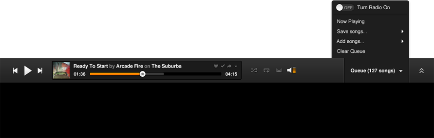

Build Your Musical Empire
Create your online music Utopia. Add songs and albums to your collection for easy access, save the best ones to your Favorites, assemble, edit, and save pitch-perfect Playlists—and access it all from anywhere you login.
Craft The Perfect String Of Melodies
From indie to classical to reggae, enjoy endless mood-setting possibilities with our 30 genre Radio Stations, or launch a personalized Radio Station based on the artists in your Current Songs. Mark songs with a “happy” or “sad” face to further tailor the tunes to your taste, add and remove songs from the list, and even save a particularly wonderful session as a Playlist to relive the experience again and again.
Never Be Without Grooveshark
Access Grooveshark’s extensive music library on your mobile devices with our new beta HTML5 site. Search and play music instantly, build and save Playlists, listen to genre Radio Stations, and enjoy Popular songs on-the-go. No app download required, and best of all, it’s free!
Music Sounds Better When Shared
Our enhanced Community features transform your listening session into an interactive music experience. Follow your friends and view their listening activity in real-time, easily share your favorite songs and Playlists on social media sites, and use the sidebar to see which friends are currently online.